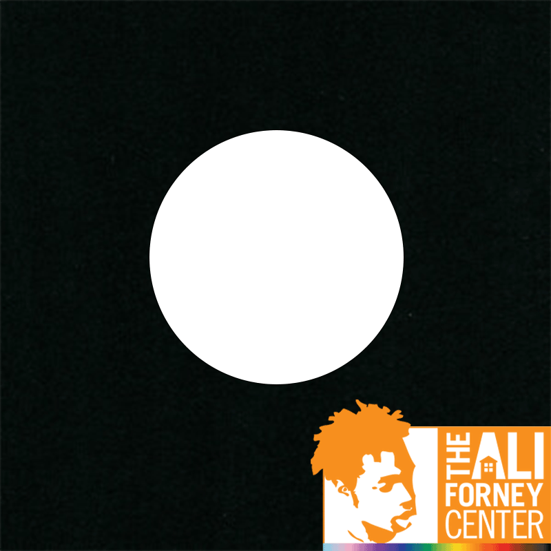

Underneath the guidance of Marthinus JC Van Loggerenberg, the director of the Advertising program at The University of San Francisco, I created a campaign I call "Shine A Light" which draws attention to the homelessness crisis among LGBTQ+ youth. In order to successfully get my message across, this campaign was created as a hypothetical partnership with the Ali Forney center for displaced LGBTQ+ youth in New York City. Within the campaign exists an OOH ad, a print ad, a radio ad, a digital mailer, and a digital display ad. This campaign does not exist in reality, but Queer Youth Homelessness is an issue close to my heart and something I am deeply passionate about.
My idea for an OOH advertisement is a series of colored lights attached to streetlamp posts across New York City which turn the white beam of the streetlight into a rainbow beam, which will illuminate onto a QR code painted into the sidewalk. The QR code redirects to a website talking about the "Shine a Light" campaign and brings the viewer's attention to this issue, and encourages them also to donate! Every dollar donated to the Ali Forney Center via the QR codes keeps the rainbow lights illuminated for another sixty seconds. People will want to donate in order to keep the lights lit in order to take pictures underneath the pretty ambience, and the goal is to gain additional social media traction from people using the #ShineALight tag when posting their pictures. The print ad to accompany the campaign will be posted in magazines and on the subway.
This is a Digital Display ad meant to play in the sidebar of websites. I designed it to be eye-catching due to its stark black and white visuals and continuous movement, which are things the human eye is naturally drawn to.
The Ali Forney Center has a program called "Project Birthday" that provides birthday celebrations to youth in their programs, so I decided to claim occasion and create a digital mailer to be sent out to people on the donation email list on their own birthdays.